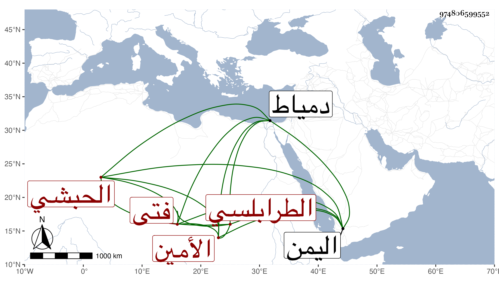

0902Sakhawi.DawLamic.ITO20230111-ara1.EIS1600.974806599552
Biography ID: 974806599552
68
بشير الحبشي الأميني فتى الأمين الطرابلسي ولد تقريبا في عشر التسعين وسبعمائة وقدم مع مولاه محمد بن سويد الحلبي وهو دون البلوغ فأقام عنده يسيرا ثم اشتراه منه الامين الطرابلسي الحنفي فخدمه وربى أولاده وسمع معهم علي الشرف بن الكويك وقرأ يسيرا من القرآن وأعتقه سيده سنة وفاته فتعاني التجارة في السكر وغيره ودخل اليمن وحج كثيرا وجاور وتردد إلى دمياط مرارا ثم قطنها مختفيا من ديون تراكمت عليه ولقيته بها فقرأت عليه جزءا . ومات بها في الطاعون سنة أربع وستين بعد أن اختل قليلا لتقدم موت أهله وبنيه عوضه الله خيرا .
